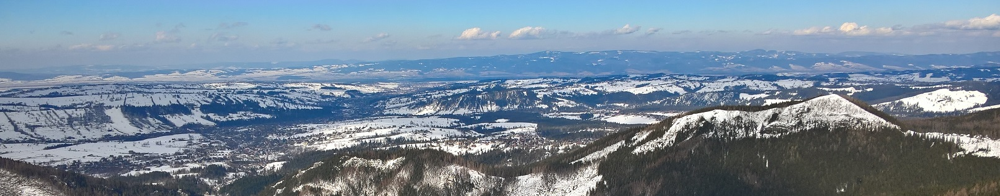

About

I am currently a visiting scholar in the LUC Lab. at the Department of Environmental Science, Policy & Management at the University of California, Berkeley. My research focuses on an understanding of coupled human-environmental systems. I am interested in the use of remote sensing and geoinformation methods in environmental change studies. I connect advance remote sensing methods from big data mining to machine learning with land system analysis. My current study regions are mountains and polar regions. I am a strong advocate of open science and reproducible research.
Education

2007: PhD in the Earth Science within Geography
Faculty of Biology and Earth Science, Jagiellonian University (Poland)
Thesis: Modelling of land cover change in space and time (Institute of Geography and Spatial Management at the Jagiellonian University Award for outstanding PhD thesis within Geography defended between 2005 and 2007)
2004: MSc in Physics (specialization: Nuclear Physics)
Institute of Physics, Faculty of Physics, Astronomy and Applied Computer Science, Jagiellonian University (Poland)
Thesis: Cross-sections of nucleus-proton fragmentation reactions
2002: MSc in Physical Geography within Environmental and Mathematical Studies (specialization: Geographic Information Systems)
Institute of Geography and Spatial Management, Faculty of Biology and Earth Science, Jagiellonian University (Poland)
Thesis: Spatial distribution of forests in the Western Beskidy Mountains (Polish Geographical Society Award for outstanding MSc thesis)
Projects

TRACE project: Trajectories, causes and effects of land cover and land use changes in Central Europe (Global Land Programme contributing project, grant from National Science Center - Poland, no.2018/29/B/ST10/02979) [role: Principal Investigator]
SOCPIX project: Socializing the pixel - detecting and understanding of changing land systems with remote sensing and social sciences (grant from Polish National Agency for Academic Exchange, no. PPN/BEK/2018/1/00310/00001) [role: Principal Investigator]
TRACE project

Project objectives
- to apply for recent advances in remote sensing for wall to wall mapping of land cover and land use change trajectories using optical and radar imagery (Landsat, Sentinel-1 and Sentinel-2) and advantage of data dense time series across Central Europe (Czechia, Hungary, Poland, Slovakia) over last fifty years,
- to better understand the causes of land cover and land use change across Central Europe,
- to assess the effects of land cover and land use change on biodiversity and carbon pools and fluxes across Central Europe.
Project tasks
- Mapping land cover and land use change trajectories using Earth observation (CORONA, Landsat, Sentinel-1 and Sentinel-2, UAV),
- Spatial modelling of land cover and land use change causes in tele-coupling framework,
- Assessment of land cover and land use change effects on biodiversity,
- Estimation of land cover and land use change effects on the carbon cycle.
Publications
In progress ...
Data&codes
In progress ...
Team
Katarzyna Ostapowicz (Principal Investigator)
Mateusz Szczęch (Postdoctoral researcher)
Global Land Programme contributing project, grant from National Science Center - Poland, no.2018/29/B/ST10/02979
Completed projects

RS4FOR project: Land cover and forest change detection and monitoring using passive and active remote sensing data (grant from National Science Center - Poland, 2016-2020, no.2015/19/B/ST10/02127) [role: Principal Investigator]
CON@SK.PL project: Transboundary ecological connectivity – modelling landscapes and ecological flows (grant from Visegrad Funds, 2017-2018, No. 21640051) [role: Co-Principal Investigator]
FORECOM project: Forest cover changes in mountainous regions - drivers, trajectories and implications (grant from Swiss Contribution , 2012-2016, No. PSPB 008/2010) [role: Senior researcher]
LIM project: Integration of categorical- and gradient-based approaches in landscape fragmentation and connectivity modelling using GIS&T (grant from National Science Center - Poland, 2012-2015, no. 2011/03/D/ST10/05568) [role: Principal Investigator]
200 years of land use and land cover changes and their driving forces in the Carpathian basin in Central Europe (grant from NASA LCLUC program, 2011-2014, No. NNH09DA001N) [role: Senior researcher]
Mountain.TRIP project: Mountain Sustainability: Transforming Research into Practice (EU: SEVENTH FRAMEWORK PROGRAMME Environment (including Climate Change), 2009-2011, No. FP7-ENV-2009-5.1.0.2) [role: Senior researcher]
Land cover and land use change in the Polish Carpathians (grant from Polish Ministry of Science and Education, 2008-2010, No. NNH09DA001N) [role: Co-Principal Investigator]
Land use change in the period of political transformation and their relationship with natural and socio-economic conditions in the western part of the Beskidy Mountains (grant from Polish Ministry of Science and Education, 2004-2007, No. NNH09DA001N) [role: Doctoral researcher]
Publications

Grabska E., Frantz D., Ostapowicz K., 2020, Evaluation of machine learning algorithms for forest stand species mapping using Sentinel-2 imagery and environmental data in the Polish Carpathians, Remote Sensing of Environment, 251, 112103
Bolliger J., Schmatz D.R., Pazúr R., Ostapowicz K., Psomas A., 2017, Reconstructing forest-cover change in the Swiss Alps between 1880 and 2010 using ensemble modelling, Regional Environmental Change, 17, 8, 2265–2277
Ziółkowska E., Ostapowicz K., Radeloff V.C., Selva N., Kuemmerle T., Śmietana W., 2016, Assessing differences in connectivity based on habitat versus movement models for brown bears in the Carpathians, Landscape Ecology, 31, 1863-1882
more publications ...
Contact

Postal and office address: University of California, Berkeley, 326 Mulford Hall, CA 94720, USA
email: katarzyna.ostapowicz@berkeley.edu